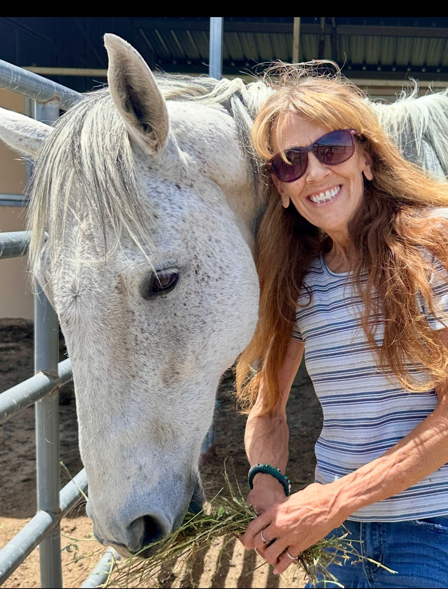

Every application.
One place.
Volunteer, foster, and adoption applications — plus contract intake — all in one spot. Fill it out, it comes straight to our team at Journey With Equus.

Three ways in.
Volunteering asks for your time. Fostering asks for your barn. Adopting asks for a lifetime.
Volunteer
Barn chores, feeding, grooming, event support. No experience required for most roles.
Volunteer ApplicationFoster
You provide the property and daily care. The horse stays sanctuary-owned the whole time.
Foster/Adoption ApplicationAdopt
A lifetime commitment. If life changes, the horse comes back to us — never to an auction.
Foster/Adoption ApplicationOpen a gate, fill it out.
Every form here goes straight to our team at Journey With Equus, with a confirmation the moment it's in.
You MUST be 18 years or older to submit this application, and you MUST provide three non-related references.
Foster & Adoption Contracts
Approved fosters and adopters only. This isn't the contract itself — it's what our team needs to send you the official one to sign.
Approved to foster? Enter the password our team gave you.
Liberty's Legacy Inc. dba Journey with Equus · 2470 Driftwood Circle, Elizabeth, CO 80107 · 303-688-3656 · Info@journeywithequus.com
This Foster Agreement (the "Agreement") is made between Liberty's Legacy Inc. dba Journey with Equus ("JWE") and the foster party identified below ("Foster"). Foster agrees to care for the horse described below for the purpose of providing a safe, healthy, and loving environment, and to abide by all anti-cruelty laws of the state in which the horse resides. The health, safety, and welfare of the horse are the paramount and controlling purpose of this Agreement, and every provision is to be read and enforced in favor of the horse's welfare.
Purpose of This Foster Placement. JWE places horses in foster homes to give them a safe, stable place to settle and heal after what is often a traumatic history, including time in the auction pipeline or a kill pen, the length of which is frequently unknown. JWE seeks committed, long-term foster homes where a horse can decompress, be evaluated over time, and be safe, healthy, and loved. A foster placement may lead to one of two outcomes: the Foster may choose to adopt the horse (a "foster fail"), or the Foster helps JWE care for and evaluate the horse until JWE places it in a permanent adoptive home. By signing, Foster acknowledges and embraces this long-term purpose.
A. Horse and Foster Information
Collected in the form below: the horse's name, age/DOB, sex, height, breed, weight, registry and registration number if known, identifying description, and Foster's full legal name, phone, email, and the physical address where the horse will be kept.
B. Ownership of the Horse
The horse fostered under this Agreement remains the sole and exclusive property of JWE at all times. Foster acquires no ownership interest in the horse and may not sell, transfer, give away, lease, loan, or pledge the horse. Foster agrees to return the horse to JWE upon JWE's request. Because JWE retains ownership, JWE retains the decision-making authority described in this Agreement, including the authority over end-of-life decisions set out in Section E.
C. Required Level of Care
The level of care for fostered rescue horses shall meet the highest standards in the industry. Foster agrees to meet or exceed every item below for as long as the horse is in Foster's care. Failure to do so is a material breach of this Agreement.
- Feed: the horse must receive its required daily feed allowance together with plenty of good-quality grass and/or hay.
- Water: no less than fifteen (15) gallons of fresh, clean water each day, in buckets or in regularly cleaned troughs, kept unfrozen in winter.
- Pasture: at least one (1) acre of clear pasture with safe, acceptable fencing (no barbed wire as primary fencing for the horse).
- Shelter: a three-sided shed in the paddock to block wind and inclement weather.
- Turnout and living arrangement: the horse shall not live in a box stall. The horse must receive at least eight (8) hours of turnout in a paddock or pasture every day, except during genuinely dangerous or inclement weather. The horse may be stalled overnight provided this daily turnout minimum is met. The horse shall be allowed to live in a manner natural to a horse, with room to move and the companionship required below, and shall not be continuously confined, tethered, or picketed as its primary means of containment.
- Companionship: horses are herd animals; the horse will not be fostered to a home without another horse or suitable companion.
- Farrier: trimmed and/or shod by a qualified farrier, going no longer than every eight (8) weeks.
- Dental: a qualified dental examination and floating at least once every twelve (12) months.
- Vaccinations (standard veterinary protocol): Spring — Eastern/Western Encephalitis, Tetanus, Rabies, and any others recommended by your veterinarian; Fall — Influenza, Rhino, and any others recommended by your veterinarian.
- Parasite control: deworming guided by fecal egg count testing, deworming the horse when testing or veterinary advice indicates it is needed, rather than on an automatic blanket rotation.
- Work: Foster shall not work the horse beyond its physical limitations at any time, or put the horse in harm's way at any time.
Variations in facility requirements may depend on the horse, the region, and the predominant weather. JWE is happy to visit and approve a facility accordingly.
D. Veterinary Care, Costs, and Donations
1. Cost Responsibility — Routine vs. Emergency. Foster is responsible, at Foster's own expense, for the horse's routine care while in foster, including feed, farrier, dental, vaccinations and deworming as described in Section C, and ordinary wellness and veterinary maintenance. Emergency veterinary care must be approved by JWE in advance whenever it is reasonably possible to do so, and is handled as set out in the next paragraph. The arrangement below does not apply when the horse is injured off Foster's approved property or during the activities described in the Performance clause, in which case Foster bears those costs in full as stated there.
2. Emergency Care — Approval, Commitment, and Reimbursement. In a veterinary emergency, Foster shall obtain prompt care for the horse and contact JWE as soon as possible. Except where immediate, life-saving action is required, Foster shall obtain JWE's approval before authorizing major emergency treatment. Foster understands that JWE is a nonprofit rescue that funds emergency care through donations and fundraising. For approved emergency care, Foster commits with the treating veterinarian for the cost of treatment and remains responsible to the veterinarian in the meantime. JWE is glad to fundraise for emergencies and will make reasonable efforts to do so and to reimburse Foster for approved emergency expenses; because fundraising takes time, Foster understands that reimbursement may be delayed or partial and depends on the funds actually raised. Foster agrees to explain to the emergency veterinarian that JWE is a nonprofit rescue that typically must fundraise to cover these costs, and is encouraged to ask whether the veterinarian offers a discount for nonprofit rescues, since the horse remains the property of a 501(c)(3) organization. If a diagnosed condition cannot be funded or treated, the horse shall be returned to JWE so JWE can arrange appropriate care.
3. Foster-to-Adopt Election. A Foster who intends to adopt the horse may elect, in writing, to assume one hundred percent (100%) of the horse's expenses during the foster period, including all routine and emergency veterinary care. In that case, the emergency-care arrangement above (JWE approval, fundraising, and reimbursement) does not apply, and if the Foster later adopts the horse, there will be no adoption fee, in recognition of the Foster having relieved JWE of those costs. A Foster who instead relies on JWE's emergency-care arrangement above understands that an adoption fee (generally $1,500 to $3,500, depending on the horse) will apply if the Foster later adopts.
4. Donation Support for Fostered Horses. JWE is working to create and promote a donation flow that will allow the public to donate toward the care of horses in foster, organized by individual horse. This donation flow is in development and not yet active. JWE cannot guarantee the amount, if any, that will be raised for any horse. Once active, donations designated through that flow for a specific horse in Foster's care will be transferred to Foster on a monthly basis, as and when such donations are received, to support that horse's care. This donation support does not change Foster's responsibility for routine care or the handling of emergency costs set out above.
5. Use of Funds and Receipts. Any donation funds transferred to Foster, and any emergency reimbursement, shall be used solely for the care of the specific horse for which they were provided. Foster shall keep receipts and reasonable documentation showing how those funds were spent on the horse, and shall provide them to JWE on request and with the periodic check-ins. This protects donor intent and JWE's nonprofit recordkeeping.
6. Tax Treatment of Foster Expenses. Expenses that Foster incurs caring for the horse and is not reimbursed for may be deductible by Foster as a charitable contribution, subject to IRS rules and Foster's individual circumstances. On request, JWE will provide written acknowledgment of Foster's volunteer service to help support such a deduction. Expenses that JWE reimburses (including approved emergency care) are not deductible by Foster. Foster should consult their own CPA or tax advisor about what may and may not be deducted and how to structure and document it; JWE does not provide tax, accounting, or legal advice.
7. Pre-Departure Check. It is advised that Foster pay for a veterinary check before the horse departs JWE's facility.
8. No Guarantee of Rideability, Training, or Temperament. JWE makes no representation, guarantee, or warranty as to whether the horse is rideable, its level or quality of training, or its behavior or safety under saddle or when handled. Many horses arrive with unknown histories. Foster assumes all risk associated with handling, riding, or working the horse, and understands the horse may be untrained, unsound, or unsafe to ride.
9. Veterinary Soundness Evaluation Before Riding. Because the horse's physical condition and history are often unknown, Foster shall not ride or work the horse under saddle unless and until a licensed veterinarian has evaluated the horse's soundness, including its legs and back, and cleared the horse for that use. This requirement protects the horse from being worked through pain or injury and reduces the risk of injury to people. Foster shall also allow the horse adequate time (at least seven (7) days, and longer if needed) to acclimate before any riding.
10. Performance, Competition, and Off-Property Use. Even after the horse has been cleared to ride, the horse shall not be used for barrel racing, pole bending, flag or other speed events, roping, jumping, gaming, or any other strenuous or competitive activity until all of the following are met: (i) a licensed veterinarian has specifically evaluated and cleared the horse for that level of work; (ii) the horse has reached and is maintaining a healthy body condition (a Henneke body condition score of at least 5), as most rescue horses must first regain weight and condition before being asked to perform; and (iii) JWE has given its prior written approval. Whenever the horse is trailered or taken off Foster's approved property for any activity, Foster assumes one hundred percent (100%) of the responsibility and liability for the horse — including any injury, illness, lameness, loss, theft, or death of the horse, and any injury or damage to any person or property — and Foster indemnifies and holds JWE harmless for all of it. Notwithstanding JWE's general responsibility for emergency veterinary care, if the horse is injured while off Foster's approved property, Foster is solely and one hundred percent (100%) responsible for all emergency and follow-up veterinary care and its full cost; JWE will not assume that cost. Foster is responsible for safe transport and handling and is strongly encouraged to carry appropriate equine liability and mortality insurance for any such activity.
E. End-of-Life Decisions (Euthanasia)
Because the horse remains the property of JWE, end-of-life decisions belong to JWE.
11. Euthanasia Requires JWE Approval. The horse shall not be euthanized without JWE's prior approval, except in a genuine, immediately life-threatening emergency in which the horse is suffering and that suffering cannot be relieved — such as a severe colic confirmed to be non-survivable, or a catastrophic injury — and only where a licensed veterinarian who is physically present confirms that nothing further can be done and that waiting would only prolong the horse's suffering. In every other circumstance — including lameness, a condition believed to be unfixable, or a veterinarian's recommendation to euthanize a horse that is not in uncontrollable distress — Foster must contact JWE and obtain JWE's approval before any euthanasia is performed. JWE may obtain a second opinion, direct further diagnostics or supportive care, or resume responsibility for the horse. If JWE cannot be immediately reached in a non-emergency situation, Foster shall continue supportive care and keep attempting to reach JWE rather than proceed. The horse is not presumed a candidate for colic or other major surgery; any elective or major surgery requires JWE's prior approval, and Foster is responsible for its cost only if Foster chooses to pursue it with JWE's consent.
F. Monitoring, Check-Ins, and Visits
12. Mandatory Check-In Schedule. Beginning on the date the horse leaves JWE's custody, Foster agrees to complete a check-in with JWE (by the method JWE designates, including an online form) with current photographs of the horse, on the following schedule: within 24 hours of arrival; within 72 hours of arrival; at 30 days; and every 90 days thereafter for as long as the horse is in foster. Foster agrees to respond to each check-in, and to any reasonable request from JWE for an update or photographs, within five (5) days.
13. Visits. JWE reserves the right to visit the horse at any time with forty-eight (48) hours' advance notice to Foster. Where JWE has a reasonable concern for the horse's welfare, Foster consents to an expedited visit on shorter notice. Refusal to permit reasonable visits is a material breach.
G. Restrictions on Use and Transfer
14. No Transfer. Foster shall not sell, give away, lease, loan, trade, or otherwise transfer possession of the horse to any person without JWE's prior written approval. The horse shall remain with the named Foster unless JWE agrees otherwise in writing.
15. No Auction or Slaughter. The horse shall never be sold, sent, or surrendered to auction, a kill pen, a broker, or to slaughter, whether through the direct or indirect action or inaction of Foster. (You'll initial this below.)
16. No Breeding. UNDER NO CIRCUMSTANCES SHALL THE HORSE BE USED FOR BREEDING PURPOSES. (You'll initial this below.)
17. No Prohibited Uses. Foster shall never allow the horse to be used for equine experimentation, Premarin production, as rough stock in rodeos, for racing, or for cruel sports such as equine "tripping," and shall use only safe, humane, and ethical methods of handling and training. (You'll initial this below.)
H. Location and Relocation
18. Approved Location. The horse shall be kept at the location identified in Section A, which JWE may inspect and approve. The horse may not be moved to a new location, nor placed in a commercial or typical boarding situation, without JWE's prior written approval and signed site approval; JWE will not approve any arrangement in which the horse lives in a box stall or receives less than eight (8) hours of daily turnout (except during genuinely dangerous weather). Foster shall keep the horse within a distance reasonable for JWE to conduct visits and shall not relocate the horse out of state without JWE's prior written approval.
I. Required Notifications
Foster agrees to contact JWE immediately for any of the following:
- If Foster can no longer care for the horse.
- If the horse becomes seriously injured or ill.
- If the horse dies.
J. Return and Reclamation
19. Return at Any Time. The foster horse can be returned to JWE at any time, regardless of reason, and must be returned if Foster can no longer provide a safe, healthy, and loving home.
20. JWE's Right to Recover. JWE holds the right to recover the horse if it is ever abused, abandoned, neglected, starved, mistreated, or otherwise endangered in any way, or if Foster fails to abide by the Required Level of Care or breaches any term of this Agreement. Foster consents in advance to surrender the horse to JWE on demand, and shall be responsible for JWE's reasonable costs of recovery and transport.
K. Transport and Liability
21. Transport Costs. All shipping costs, including departing transport, transport while the horse is away, and return transport, are to be paid by Foster.
22. Liability. JWE is not responsible for any accidents or injuries to the horse or to Foster after the horse leaves JWE's facility.
L. Disclosure and Release
Foster represents, warrants, and declares awareness of the following in connection with fostering the horse from JWE:
- A) That horses are different from human beings in their responses to human actions;
- B) That the actions of horses are often unpredictable;
- C) That horses should be closely and carefully supervised when they are with or around children;
- D) That the horse's behavior may change after it leaves JWE's facility;
- E) That a horse in a new environment may act differently, and Foster will afford the horse adequate time (at least 7 days) to acclimate before being ridden, to the extent the horse is rideable;
- F) That any statements made by JWE or its representatives regarding the horse, orally or in this Agreement, are merely opinions given solely as a courtesy and are not claims, representations, or warranties as to the temperament, health, mental disposition, rideability, level of training, or behavior under saddle of the horse for Foster's intended purposes;
- G) Foster releases, discharges, indemnifies, and holds harmless JWE from and against any and all claims, liens, damages, losses, and causes of action that may be asserted by Foster or any third party for injury or damage to any person, property, or thing whatsoever caused directly or indirectly by the horse.
(You'll initial Subsections A–G below.)
M. General Provisions
23. Entire Agreement. This Agreement represents the entire agreement between the parties. No other agreement or promise, verbal or implied, is included unless specifically stated in writing. Any amendment must be in writing and signed by both parties.
24. Severability and Governing Law. If any provision is held invalid or unenforceable, the remaining provisions remain in full force and effect. This Agreement is governed by the laws of the State of Colorado.
25. Electronic Signature. The parties agree this Agreement may be signed electronically, that an electronic signature has the same force and effect as a handwritten signature, and that it may be executed in counterparts, each deemed an original.
N. Acknowledgment and Signature
"I have read and understand the conditions of this Foster Agreement and agree to uphold the highest level of care for the fostered horse." Signed electronically below, per Section M.25. JWE's Authorized Representative countersigns separately after review.
Approved to adopt? Enter the password our team gave you.
Liberty's Legacy Inc. dba Journey with Equus · 2470 Driftwood Circle, Elizabeth, CO 80107 · 303-688-3656 · Info@journeywithequus.com
This Adoption Contract (the "Agreement") is a legally binding instrument between Liberty's Legacy Inc. dba Journey with Equus ("JWE") and the adopting party identified below ("Adopter"). The health, safety, and lifelong welfare of the equine are the paramount and controlling purpose of this Agreement, and every provision is to be read and enforced in favor of the equine's welfare. All adopters are required to sign this Agreement in order to help ensure the safety of the equine's future. Signature is mandatory; JWE will not release any equine without it.
A. Equine and Adopter Information
Collected in the form below: the equine's name, registered name if any, breed, color, sex, age, microchip/tattoo/brand number, known medical conditions, Adopter's full legal name, phone, email, physical address, co-adopter if any, the adoption deposit and fee, balance due date, and whether the equine will be kept at Adopter's home or an approved boarding facility.
B. Defined Standard of Care
Throughout this Agreement, the "Standard of Care" means, at minimum, all of the following. Adopter agrees to meet or exceed every item for the entire life of the equine. Failure to meet the Standard of Care is a material breach of this Agreement.
- Nutrition: a forage-based diet in quantity and quality sufficient to keep the equine at a body condition score of 5 to 7 on the Henneke scale, adjusted for age, workload, and health.
- Water: clean, fresh, unfrozen water available at all times, including in winter.
- Shelter: safe shelter providing protection from sun, wind, precipitation, and extreme heat and cold at all times.
- Footing and fencing: safe, secure, properly maintained fencing and turnout free of hazards; no barbed wire as primary fencing for the equine.
- Living arrangement and turnout: the equine shall not live in a box stall. The equine must receive at least eight (8) hours of turnout in a paddock or pasture every day, except during genuinely dangerous or inclement weather, and may be stalled overnight provided this daily turnout minimum is met. The equine shall be permitted to live in a manner natural to a horse, with room to move and the companionship described below, and shall not be continuously confined, tethered, or picketed as its primary means of containment.
- Companionship: equines are herd animals; the equine shall not be kept in prolonged social isolation and shall have appropriate equine or other suitable companionship.
- Hoof care: professional farrier care at intervals not exceeding eight (8) weeks, or more often as the equine's needs require.
- Dental care: a qualified dental examination and floating at least once every twelve (12) months, or more often as needed.
- Veterinary care: routine examinations and prompt veterinary attention for any illness or injury.
- Vaccinations: core vaccinations kept current in accordance with standard veterinary protocol and as recommended by a licensed veterinarian, including rabies and any vaccines required by law.
- Parasite control: a deworming program guided by fecal egg count testing, deworming the equine when testing or veterinary advice indicates it is needed, rather than on an automatic blanket schedule.
- Identification: any microchip, brand, or tattoo identifying the equine shall remain in place and shall not be altered, removed, or obscured.
- Humane handling: only safe, humane, and ethical methods of handling, training, and discipline.
C. Ownership, Payment, and Brand Inspection
1. Payment and Ownership. Adopter agrees to pay the full adoption fee stated above and understands that the equine remains the legal property of JWE until such time as the brand inspection is transferred to Adopter by JWE. If full payment of the adoption fee is not received by the due date stated above, Adopter shall, at its own expense, return the equine to JWE, pay all costs and fees involved (veterinary, inspection, transport, and similar), and forfeit the Adoption Deposit.
2. Adoption Following Foster. Adoption from JWE typically follows a foster period of approximately one (1) year, during which the equine settles after its prior history and the placement is evaluated for fit. Where the Adopter fostered this equine before adopting, the parties acknowledge that prior foster relationship, and the fee provision below reflects how the equine's expenses were handled during that period.
3. Adoption Fee and Fee Waiver. JWE's standard adoption fee depends on the individual equine and generally ranges from $1,500 to $3,500; the fee for this equine is stated in Section A. There will be no adoption fee where the Adopter fostered the equine and, during the foster period, assumed one hundred percent (100%) of the equine's expenses — including all routine and emergency veterinary care — thereby relieving JWE of those costs. Where JWE paid, covered, or fundraised for the equine's emergency veterinary care during the foster period, the adoption fee applies and is due as stated in Section A.
4. Brand Inspection and Co-Ownership. JWE will retain possession of the brand inspection for at least twelve (12) months from the date of this Agreement. After that time, Adopter may request in writing that JWE add Adopter to the brand inspection. Within a reasonable period after receiving the request, JWE will inspect the facilities where the equine is kept and assess whether the terms of this Agreement are being reasonably fulfilled. If, in its sole discretion, JWE is reasonably satisfied that the equine is receiving the care required by this Agreement, JWE will facilitate updating the brand inspection to include Adopter's name. JWE will remain on the brand inspection as a co-owner for the life of the equine to ensure this Agreement is not breached, including any unauthorized re-sale or transfer of the equine.
D. Care and Welfare Obligations
5. Provision of a Proper Home. Adopter agrees to provide the equine a loving home that meets or exceeds the Standard of Care defined in Section B at all times, including proper food, fresh water, adequate exercise, a secure and safe living environment, and appropriate shelter.
6. Veterinary, Hoof, and Dental Care. Adopter agrees to provide veterinary, hoof, and dental care as needed to maintain the equine's good health, consistent with the Standard of Care in Section B, including core vaccinations kept current under standard veterinary protocol. Parasite control shall be guided by fecal egg count testing rather than blanket scheduled deworming, as described in Section B.
7. As-Is Adoption; Assumption of Risk. Adopter adopts the equine as is. All responsibility for risks associated with, and liability for, the care and control of the equine transfers to Adopter from the date this Agreement is signed forward, unless otherwise agreed in writing. Adopter assumes all responsibility for treatment of any and all existing conditions and any that may later occur. JWE is not responsible or liable for any injury or damage caused by the equine, nor for any veterinary, medical, or other expense incurred after the date of adoption unless prearranged and agreed in writing.
8. No Warranty of Information. All information about the equine (breed, age, history, temperament, and similar) is based on details provided by previous owners, a veterinarian, or JWE and may not be accurate. JWE makes every effort to disclose known medical conditions in the Addendum, but makes no guarantee as to the health of any equine offered for adoption.
9. No Guarantee of Rideability; Soundness Before Riding. JWE makes no representation, guarantee, or warranty as to whether the equine is rideable, its level or quality of training, or its behavior or safety under saddle. For the equine's welfare and the safety of people, Adopter shall not ride or work the equine under saddle until a licensed veterinarian has evaluated the equine's soundness, including its legs and back, and cleared it for that use, and the equine has reached and is maintaining a healthy body condition appropriate for the intended work.
E. Monitoring, Check-Ins, and Photo Updates
It is the intention of JWE to monitor the care, health, and welfare of the equine for its entire life. Adopter expressly consents to the following and understands that these obligations are a material part of this Agreement.
10. Mandatory Check-In Schedule. Beginning on the date the equine leaves JWE's custody, Adopter agrees to complete a check-in with JWE (by the method JWE designates, including an online form) on the following schedule, each of which must include current photographs of the equine: within 24 hours of arrival; within 72 hours of arrival; at 30 days; and every 90 days thereafter, for the life of the equine.
11. Response and Access. Adopter agrees to respond to each scheduled check-in, and to any reasonable request from JWE for an update or photographs, within five (5) days. Adopter further agrees to allow JWE personnel to make reasonable visits to the equine's location, to take calls and respond to emails from JWE regarding the equine's condition. Routine visits will be scheduled by appointment within a reasonable timeframe after JWE's request. Where JWE has a reasonable concern for the equine's welfare, Adopter consents to an expedited visit on short notice. Failure or refusal to respond to check-ins or to permit scheduled visits within a reasonable timeframe is a material breach and may result in JWE reclaiming the equine.
F. Restrictions on Use and Transfer
12. No Unauthorized Transfer. Adopter shall not sell, give away, lease, loan, trade, surrender, or otherwise transfer possession or ownership of the equine to any person or entity without the prior written approval of JWE. JWE must approve any proposed new home, and any new keeper or owner must first sign an agreement with JWE substantially identical to this one. The equine shall not be used as collateral or be subject to any lien.
13. No Auction or Slaughter. Adopter agrees that the equine shall never be sold, sent, or surrendered to auction, a kill pen, a broker, or to slaughter, whether through the direct or indirect action or inaction of Adopter. (You'll initial this below.)
14. No Breeding. Adopter agrees that the equine shall not be used for breeding purposes. (You'll initial this below.)
15. No Prohibited Uses. Adopter agrees never to allow the equine to be used for equine experimentation, Premarin production, as rough stock in rodeos, for racing, or for cruel sports such as equine "tripping." (You'll initial this below.)
16. Lawful, Humane Treatment. Adopter agrees to use safe, humane, and ethical methods of handling and training, and to comply with all state and local laws and ordinances regarding the keeping and care of equines.
G. Location and Relocation of the Equine
17. Approved Location and Boarding. The equine shall be kept at the location identified in Section A. JWE generally prefers that the Adopter keep the equine on the Adopter's own property. Boarding the equine at a commercial or typical boarding stable requires JWE's prior written approval, and JWE will not approve any arrangement in which the equine lives in a box stall or receives less than eight (8) hours of daily turnout (except during genuinely dangerous weather); any approved location must provide paddock or pasture turnout consistent with Section B. The equine may not be moved to a new location without JWE's signed site approval. Adopter must notify JWE in writing at least fourteen (14) days before any move and provide the new address and contact information. JWE may decline to approve a location it reasonably determines does not meet the Standard of Care, and may require an inspection before approval. Adopter shall keep the equine within a distance reasonable for JWE to conduct inspections, and shall not relocate the equine out of state without JWE's prior written approval.
H. Lifetime Commitment and Return Policy
18. Lifetime Placement; Right of Return to JWE. Adopter understands that equines adopted from JWE are intended to be cared for by Adopter for the remainder of the equine's natural life. Should Adopter for any reason become unable or unwilling to keep the equine, JWE shall be notified immediately and the equine shall be returned to JWE. JWE will always accept a returned equine for the duration of its lifetime, regardless of age or condition. If an adoption ends, the equine shall be returned to JWE's location upon fourteen (14) days' notice from Adopter; Adopter may instead keep the equine, in compliance with the Standard of Care, while JWE secures a new home.
19. Refund Terms on Return. Fifty percent (50%) of the adoption fee will be returned to Adopter if the equine is returned within two (2) months of the contract date, provided Adopter transports the equine to JWE's facility and the equine returns with current hoof care, current vaccines, proper dental care, and at a body condition of 5–7 on the Henneke scale. If JWE must transport the equine, the cost of transport will be deducted from any refundable amount. No fee will be refunded if the equine returns underweight or reasonably showing signs of abuse or neglect as determined by JWE. If the equine lacks current hoof, vaccine, or dental care, the cost to provide those services will be deducted from any refundable amount.
I. Serious Illness, Emergency, and Death
20. Notice of Illness, Injury, or Death. Adopter shall notify JWE as soon as reasonably practicable of any serious illness, significant injury, surgery, theft, escape, or death of the equine.
21. Humane Euthanasia. The equine shall be euthanized only when humane and necessary to relieve suffering, and only upon the recommendation of a licensed veterinarian, except in a bona fide emergency where immediate action is required to relieve suffering. Adopter shall notify JWE of any euthanasia as soon as reasonably practicable and, except in an emergency, shall make reasonable effort to notify JWE beforehand. The equine's remains shall not be sold or transferred for slaughter, rendering, or commercial profit.
J. Inspection and Reclamation Rights
22. Right to Reclaim. If JWE reasonably determines that the equine is being neglected, abused, kept below the Standard of Care, endangered, or that Adopter has breached any term of this Agreement, JWE shall have the immediate right to reclaim and take possession of the equine, and Adopter consents in advance to surrender the equine to JWE upon demand. Adopter shall be responsible for JWE's reasonable costs of recovery and transport. Where the equine is reclaimed for neglect, abuse, or breach, no portion of any fee shall be refunded.
K. Liability and Indemnification
23. Indemnification. From the date of signing forward, Adopter assumes all liability arising from ownership, care, and control of the equine, and agrees to indemnify, defend, and hold harmless JWE and its officers, directors, employees, volunteers, and agents from any and all claims, damages, costs, and expenses arising out of or relating to the equine after the date of adoption.
24. Equine Activity Warning. Adopter acknowledges the inherent risks of equine activities. Under Colorado law, an equine professional or owner is not liable for the inherent risks of equine activities; this acknowledgment does not waive any right that cannot be waived by law.
L. Breach, Damages, and Dispute Resolution
25. Liquidated Damages and Costs. If Adopter fails to comply with any term of this Agreement, Adopter agrees to pay JWE an additional $5,000, plus all attorneys' fees and all costs of legal action, including litigation and arbitration, that JWE may incur to enforce this Agreement. Adopter acknowledges that this amount is reasonable and just compensation in light of JWE's charitable purpose to provide for the humane care of horses and the difficulty of accurately estimating harm at the time of signing. These costs are due whether or not JWE exercises its option to repossess the equine, and are in addition to, not in place of, JWE's right to reclaim the equine. (You'll initial this below.)
26. Arbitration and Jurisdiction. Any conflict or claim arising out of or relating to this Agreement, or its breach, shall be settled by binding and final arbitration administered by the American Arbitration Association, with jurisdiction and venue in the State of Colorado. Judgment on the award rendered may be entered in any court having jurisdiction.
M. General Provisions
27. Entire Agreement. This Agreement, together with any signed Addendum, represents the entire agreement between the parties. No other agreement or promise, verbal or implied, is included unless specifically stated in this written Agreement. Any amendment must be in writing and signed by both parties.
28. Severability. If any provision of this Agreement is held invalid or unenforceable, the remaining provisions shall remain in full force and effect, and the invalid provision shall be enforced to the greatest extent permitted by law.
29. Governing Law and Notices. This Agreement is governed by the laws of the State of Colorado. Notices under this Agreement may be given by email to the addresses on file or by mail to the addresses stated above and in Section A, and are effective when sent.
30. Electronic Signature. The parties agree that this Agreement may be signed electronically, that an electronic signature has the same force and effect as a handwritten signature, and that the Agreement may be executed in counterparts, each of which is deemed an original.
31. No Legal or Tax Advice. JWE does not provide legal, tax, or accounting advice. Adopter is encouraged to consult their own attorney, CPA, or tax advisor with any questions about this Agreement or the tax treatment of any adoption fee or donation.
N. Acknowledgment and Signature
By signing below, Adopter acknowledges that they have read and understood this Agreement in full, including the Standard of Care in Section B and the check-in obligations in Section E, agree to be bound by every term, and affirm that all information they have provided to JWE is true and accurate. Adopter understands that any false information provided to JWE is sufficient grounds for JWE to reclaim the equine. Signed electronically below, per Section M.30. JWE's Authorized Representative countersigns separately after review.
Addendum — Known Medical Conditions & Special Care Needs
Any known medical condition(s) of the equine, recommended treatment, and any special care needs are collected in the form below. By signing, Adopter acknowledges they understand the extent of any condition(s) and the recommended treatment described.